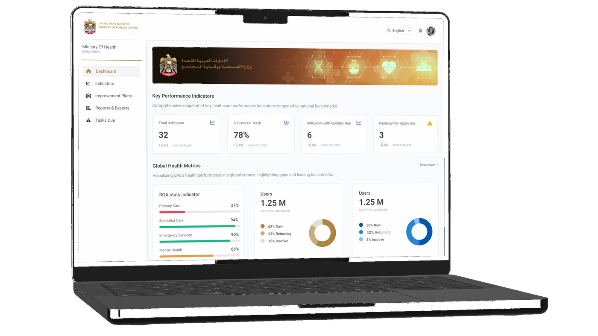
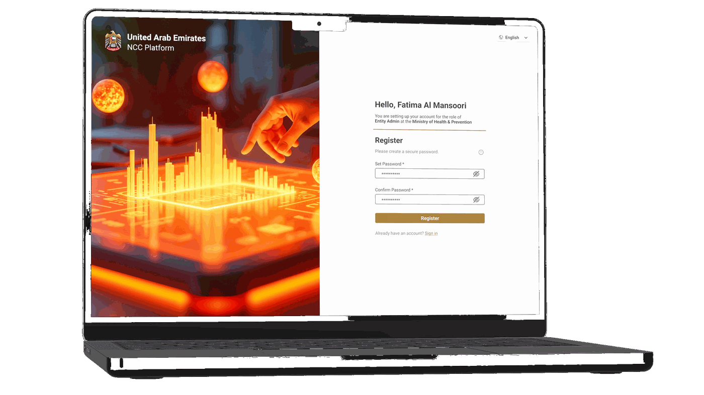
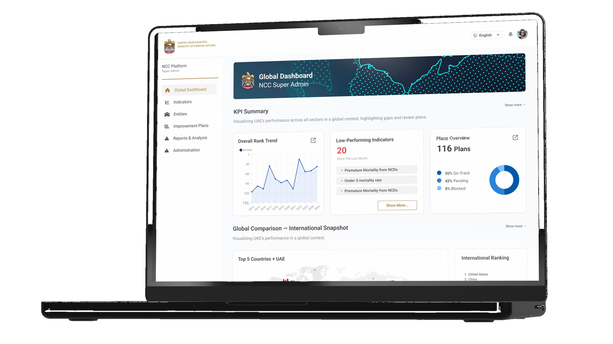
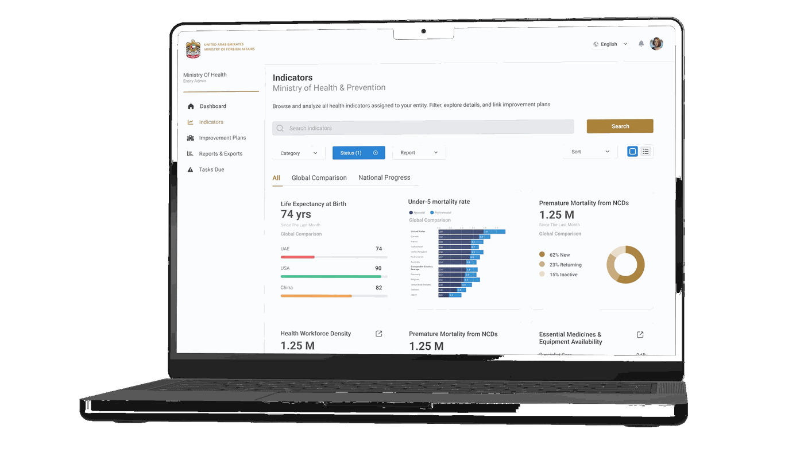
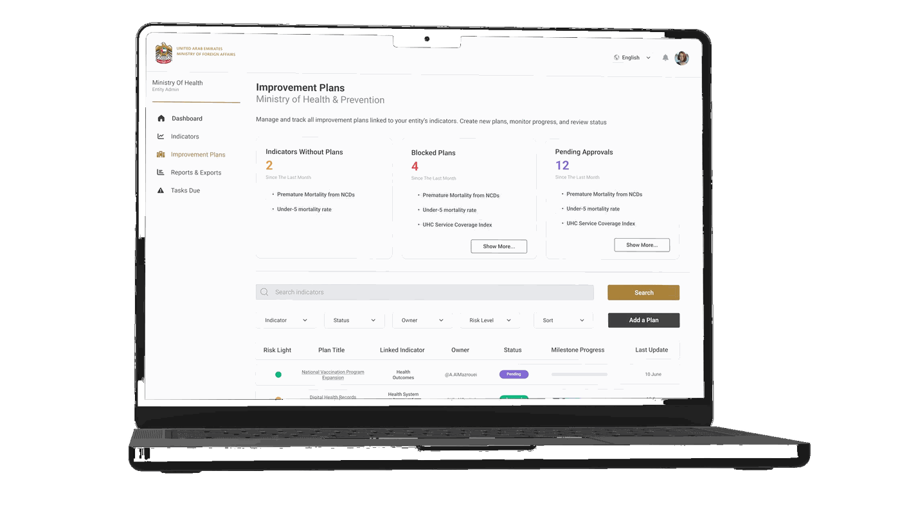
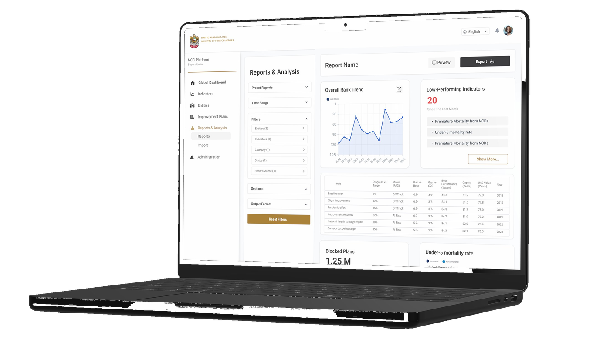

A performance management platform for the UAE's National Competitiveness Committee — enabling federal ministries and agencies to monitor global indicators, manage improvement plans, and benchmark against G20 peers.

Overview
The UAE tracks its performance across dozens of global competitiveness reports — WEF Global Competitiveness Index, WHO, OECD, and others. When an indicator underperforms, responsibility for improvement is distributed across multiple ministries and agencies, each working in silos, with no shared visibility into what plans exist, who owns them, or where progress stands.
The National Competitiveness Committee needed a single platform to answer three questions at any given moment: Where are we underperforming, and against whom? What plans exist to address it, and are they on track? What needs attention this week?
Eventagrate was pursuing the contract after the Ministry issued an RFP. I was the sole product designer, with roughly one month to deliver a proposal-ready design — from information architecture to complete UI specifications.
Context & Constraints
This wasn't a typical discovery-first project. The Ministry had already defined scope through its RFP, and Eventagrate needed a proposal-ready design within a month. That meant no primary user research — I worked from the RFP, SoW, and structured UX specifications I wrote myself. Parallel workstreams: defining the IA, writing specs, and designing screens simultaneously. The design had to work across five distinct user roles with meaningfully different access levels and use cases.
"The constraint sharpened the work. With no time to iterate widely, every decision had to be defensible from first principles."

Sign In & Registration — role-aware first-time setup
Information Architecture
The platform's core complexity isn't data — it's access. The same indicator means something different depending on who's looking at it. The roles were established by the design lead and the client brief; my job was to translate each into a distinct, purposeful experience without fragmenting the system into five separate products.
| Role | Primary Task |
|---|---|
| Super Admin (NCC) | Global visibility — all sectors, all entities, all plans |
| Entity Admin | Full management within their entity; approve submissions to NCC |
| Entity Contributor | Draft plans, log milestones, upload evidence |
| Analyst (NCC/PMO) | Cross-entity analysis, benchmarks, export packs |
| Viewer (Leadership) | Read-only dashboards, printable briefs |

Global Dashboard — NCC Super Admin view with rank trend, low-performing indicators & plans overview
Key Design Decisions
Login resolves to a different dashboard depending on role. An NCC Super Admin lands on the Global Dashboard — a national-level snapshot showing overall rank trends, low-performing indicators, and cross-entity plan status. An Entity Admin lands on their Entity Dashboard — scoped to their indicators, their plans, their tasks due this week.
This wasn't a permission filter applied to the same screen. The two dashboards have different information hierarchies, different primary actions, and different registers: the NCC view is analytical and comparative; the entity view is operational and task-oriented.

Indicators Page — filterable library with visualization and table toggle, RAG status at card level
Core Workflow
The platform's core workflow is a traceable three-step chain: a low-performing indicator gets assigned to a responsible entity → the entity drafts an improvement plan with milestones and owners → contributors log monthly progress updates that auto-roll up to plan and indicator status.
Every plan links to at least one indicator. Every progress update feeds a RAG status that surfaces back to the NCC dashboard. The chain makes accountability visible — not just to the entity, but to the NCC overseeing all of them.

Improvement Plans — risk light, milestone progress, pending approvals

Reports & Analysis — filter panel, inline preview, export controls
Dashboard Architecture
The Entity Dashboard uses a layered structure: KPI tiles at top → a world map showing UAE's position relative to G20 peers → tabbed indicator categories (Health Outcomes, System Capacity, Financing, Risk Factors) → improvement plans table → tasks due this week → submission status panel.
The Global Dashboard (NCC view) structures the same underlying data differently: rank trend sparkline + low-performing indicator list + plans overview donut → global comparison section with peer benchmarking. Two roles, two information hierarchies, one coherent design language.
Design System
The visual language was built on UAE government branding constraints — gold/amber as the primary accent (echoing the UAE flag palette), clean light surfaces for data legibility, and typography scaled for dense information displays. Bilingual-ready layout throughout, with all components designed for RTL-compatible structure.
Documentation
Because this project was for a government proposal, I produced full written UX specifications alongside the Figma designs — page by page, component by component. Each spec documented layout structure and section hierarchy, component behavior (filter interactions, table sort logic, modal triggers), empty states and error states, role-specific visibility rules, and CTA placement and workflow progression logic.
This level of documentation was deliberate: the handoff needed to be proposal-quality, readable by stakeholders who weren't designers, and precise enough for developers to build from without ambiguity. Writing the specs surfaced edge cases that the screens alone wouldn't have caught.
Reflection